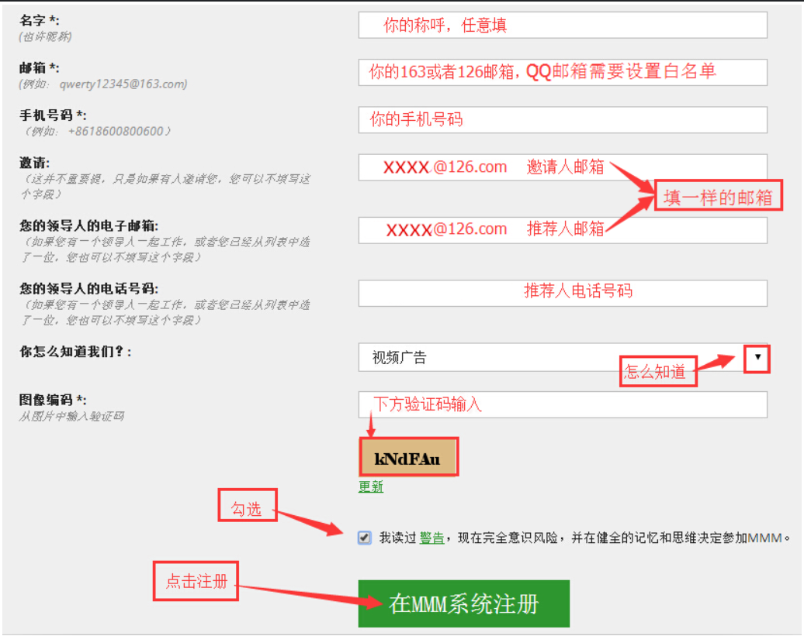
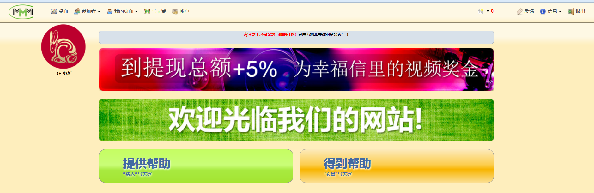
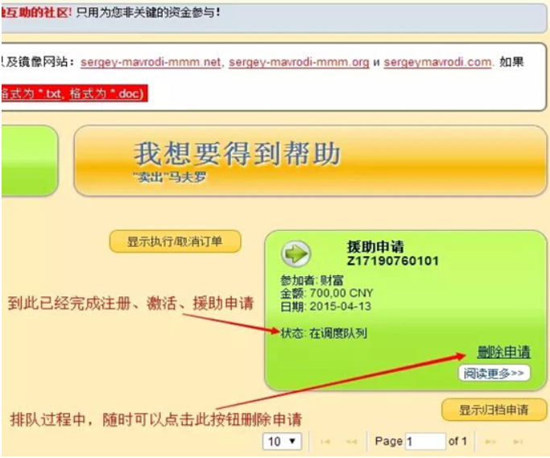
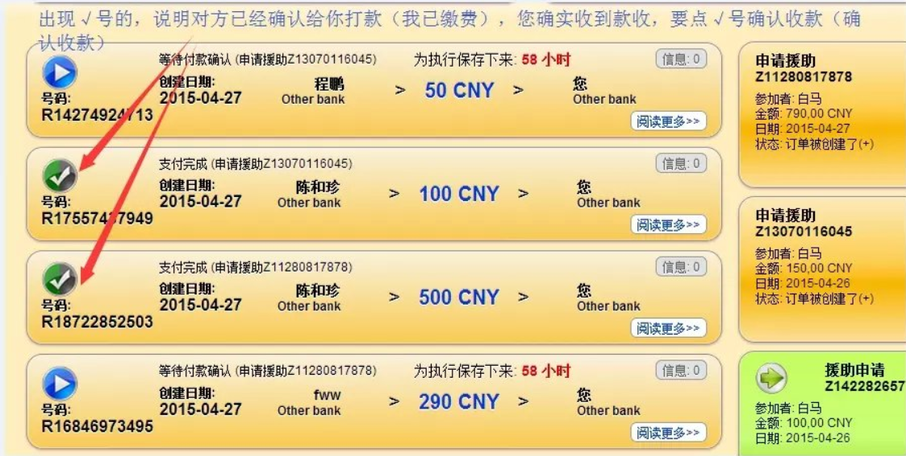
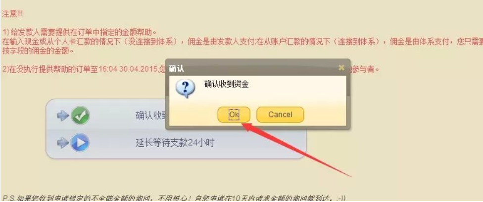

在马夫洛基喊了声：“我要拍片去”后，MMM金融互助平台终于隐现崩盘迹象。众多MMM的追随者发现他们的资金已经无法获得匹配，甚至连MMM的匹配系统都已封闭。他们终于意识到：“我上当受骗了”，多么痛的领悟！
本文目录
最早听说MMM大概是在去年的八九月份吧，朋友圈里有人开始晒MMM的收入，并不停的介绍这是一个如何如何能赚钱的项目，希望拉人一起入会，而且号称已经运作了两个月，月收入已经有十几万且可以预见的下个月收入有20几万。一听之下真是发家致富的利器呀，难道这年头钱有这么容易赚了么？于是当时就研究了一下MMM，到现为止通过亲身实践(就投入过100元)研究，观察跟踪了半年左右时间，可以说对MMM平台有了一定深度的了解，下面我们一起来看看MMM这到底是个什么鬼？
-什么是MMM？
先来看看MMM自己的说法：
MMM不是银行，MMM不收您的钱，MMM不是网上业务，高收益投资项目，投资或传销计划。 MMM是一个互相帮助的社区。 MMM给您一个技术基本计划，在全球范围内援助数以百万计的参与者，寻找那些需要您的帮助，寻找那些谁愿意提供无偿援助。到另一参与者所有资金转移是下自己的良好意愿给另外一个人您的帮助，绝对无偿援助。如果您是完全有信心，如果您对行动相信，决定来参加，首先我们恳请您仔细研究所有警告和指示。如果有任 何问题，我们的在线咨询顾问准备帮助和回答您所有的问题。
非常拗口的定义吧，文句都不是很通顺，MMM官方网站所有的内容感觉都是通过google翻译直接译过来的，语言文字都没有很好的组织，通过网站自己的介绍看不太明白它是干什么的，那么还是我来简单的解释一下吧。
MMM是一个网站，一个源自俄罗斯的网站，对于我们来说这个网站的主要功能就是三个：注册(入会)，提供帮助(给别人汇钱)，得到帮助(请别人给你汇钱)。简单明了吧？那么接下来再看看为什么要给别人汇钱而别人为什么又会给我汇钱呢？
因为MMM承诺你所投入的资金(以给别人提供帮助-汇钱的形式)每天有1%的利息，且以一个月为周期，投入的每笔资金最长不超过30天必须收回，于是每个月理论上可以有30%的收益，那么复利计算的话一年12个月，资金将翻23倍，也就是一万块钱运作一年就变成了23万了。足够诱惑了吧？所以MMM的简化流程就是这样的：你先给别人汇一笔钱比方说是汇了一万，过三十天后就能申请让别人给你汇一万三千，而给你汇了一万三的人他过一个月又能从另外的人那里申请得到一万六千九的汇款，所以就这样一层一层传播下去。
那么MMM平台是通过哪些方法保证这样的游戏可以一直玩下去的呢？咱们接着往下看。
-MMM的运作流程是怎么样的？
我们从入会开始说起，假如你想试一试的话，注册MMM的会员只需要不到一分钟时候就可以完成，注册所要的信息非常的简单:

注册成功以后就可以登录进到下面这样的MMM个人后台管理界面了。

可以看到除了广告链接，最醒目的就是两个超大的按钮”提供帮助”和”得到帮助”。在开始使用这两个功能之前先来了解一下这个叫”马夫罗”的东西，因为所有的一切都需要通过它连接起来。
–什么是”马夫罗”
我们可以简单的就把它理解为MMM提供的一种虚拟货币，当你通过MMM给他人提供帮助(打款)的时候，你就相当入买入了一定数量的马夫罗，而当你申请得到帮助(收款)时候就相当于你卖出了你所拥有的马夫罗。所以说MMM这个网站所提供的功能就是通过虚拟货币马夫罗来将打款者和收款者联系起来。后台查看马夫罗的界面大致是这样的:
可以看到马夫罗的状态分别用红，绿，蓝三种颜色表示，只有绿色的才是可以卖出的马夫罗，红色的是没有确认的，蓝色的是冻结的。之后的流程说明里可以看到马夫罗的状态是如何变化的，这里先不细说。
在大致了解了马夫罗之后，接下来就请跟着我来进行一次完整的MMM打款收款流程，假设打算投入的资金为700元(因为下面用的截图是700…)。那么首先就选择提供帮助按钮。
跟着系统的提示步骤，一步一步做完之后很容易就可以完成，完成之后就可以看到系统生成的一笔援助申请。

这个时候援助申请订单的状态是：在调度队列。意思是你申请给别人打钱还需要排队，排队时间理论上是1-15天，但是目前的时间一般为5-7天。关键的来了，这个时候你一分钱都没有付出，而系统里实际上可以看到你已经买入了等价值的700马夫罗，不过此时马夫罗的状态是红色的，表示并没有确认。接下来的时间就是等待，每天可以登录系统看一看订单的状态，一直等到系统给你分配了打款对象，就会看到类似下图的支付信息：
点开阅读更多可以看到详细的资料:
你就可以根据这个资料给对方打款了，在打款之前和打款后都可以电话对方确认一下，成功打款之后你就可以改变订单的状态:

而收到钱款的对方则会确认已经收款:
到这里你就真正的将钱款转给他人了，也就是你的提供帮助的过程已经结束了，同时可以到系统的马夫罗里看到你的马夫罗已经从红色变成了蓝色的状态，接下来要做的又是等待，MMM需要15天时间来解冻你的马夫罗，这15天是从你申请提供帮助开始算起的，比如你之前排队已经排了5天，那么还需要再等10天来解冻马夫罗。而这10天的等待和前5天的等待心情完全不同的，前面的等待自己并没有付出任何资金，而现在的等待就会稍微有点忐忑，要是MMM这个网站在这段时间内突然挂了，那刚刚转给别人的钱就一去不复返了。
十天时间总算过去了，幸运的是MMM平台仍然平稳，而你的马夫罗终于变成了绿色了，而且马夫罗的价值在你之前的金额上增加了15%，于是轮到你申请得到帮助了。
选择”得到帮助”的按钮，之后照样按照系统提示的步骤一步一步完成之后，系统就会生成一个”申请援助”订单：
理论上系统需要0-7天的时候来给你分配打款人，但是目前来看基本上是秒配的，也就是说你一申请援助马上就可以看到系统给你分配好了打款人，接下来要等的就是对方给你打款了。而你要做的就是等待和确认:


现阶段一般情况下对方都会及时给你打款，就像你之前排队五天匹配到打款人你也及时给对方打款一样，因为既然参与进来了么都希望可以一个流程完整的成功的跑下来，毕竟给别人打了款之后过十天半个月就有希望可以收回来更多的资金。而即使给你匹配到的人没有按时打款，系统也会更换另一个打款人给你。
到这里就基本上对了解了MMM的一个玩法即运作流程了吧？概括一下就这么几个步骤:
1. 申请提供帮助 - 买入马夫罗(红)
2. 排队等待
3. 正式打款给他人 - 马夫罗(红 -> 蓝)
4. 等待解冻 - 等待马夫罗(蓝 -> 绿)
5. 申请获得帮助
6. 等待他人汇款
7. 收到钱款并确认 - 他人的马夫罗(红 -> 蓝)
-为什么说MMM是骗局?
就上面这样的一个流程，明眼人一眼就能看的出来MMM想要运作下去的关键就是不断的得有新人加入进来，因为所有人的利息增长都是来自后续加入进来人的投入，这就是所谓的庞氏骗局。
–庞氏骗局
庞氏骗局是对金融领域投资诈骗的称呼，金字塔骗局（Pyramid scheme）的始祖，很多非法的传销集团就是用这一招聚敛钱财的，这种骗术是一个名叫查尔斯·庞兹的投机商人“发明”的。庞氏骗局在中国又称“拆东墙补西墙”，“空手套白狼”。简言之就是利用新投资人的钱来向老投资者支付利息和短期回报，以制造赚钱的假象进而骗取更多的投资。
而MMM平台为了吸引更多的人加入进来而设立了推荐奖和领导奖这两种奖金制度。
–推荐奖
推荐奖金10% ，也就是说被推荐人每投资(提供帮助)一次，推荐人都会得到10%的推荐提成。
–领导奖
第一代 无人数限制 5%
第二代 无人数限制 3%
第三代 无人数限制 1%
第四代 无人数限制 0.25%
而推荐奖和领导奖的获取并不需要实际的投入，也就是说这部分的资金也最终来自新加入者的投入。可见所有的资金并没有实际的投资项目支撑而来完全来自于后续参与者的投入。
之前还一直在想MMM这样一个平台自身一不拢钱，二不打广告，靠什么盈利呢？后来想明白了发现自己实在是太天真了，既然可以申请提供帮助的前提是在系统里有绿颜色的马夫罗，那么要是我是系统管理员，我自己想要钱的时候在后台随便给自己分配任意数额的马夫罗不就可以了么？而实际上并不需要这么做，因为我们有推荐奖和领导奖，只要所有第一代人的默认推荐人和领导人都设为我自己就可以了，系统就会源源不断的有马夫罗流入到我的账号里来了。所以可以看到MMM平台本身的运营资金来源来是来自所有新加入的投资人。
那么一旦发生后续供给不足，当你想卖出手里的马夫罗的时候就无法给你匹配到打款人，那么MMM也随之崩溃，而MMM本身并没有任何损失，损失的都是这个时候手里还有着卖不出去的马夫罗的人。
-参与MMM是否违法?
对于MMM平台本身的合法性相信不需要做太多的说明了，既然它整个是一个骗局那必然是不合法的，这也难怪为什么MMM的网站服务器一直架设在国外而且网址也是经常变换的了。对于我们来说更关心的是如果我们个人参与到了MMM是不是也算是违法？在这里我的观点是这样的，我认为个人参与到MMM活动中的行为肯定是不合法的，所以在此过程中遭受到的任何损失很难得到法律途径的保护，就比如你在一个赌博网站上参与赌博，输了钱不可能通过法律途径去把钱要回来，因为你本身的行为是不合法的。而至于会不会有人来追究你在赌博网站的赌博行为，或是在MMM网站上参与所谓的投资行为这个就要另外说明了。
先来来看看我们国家法律对于以下几种违法犯罪行为的司法定义。
-诈骗罪
诈骗罪是指以非法占有为目的，用虚构事实或者隐瞒真相的方法，骗取数额较大的公私财物的行为。 通常认为，该罪的基本构造为：行为人以不法所有为目的实施欺诈行为→被害人产生错误认识→被害人基于错误认识处分财产→行为人取得财产→被害人受到财产上的损失。
-传销
指组织者或者经营者发展人员，通过对被发展人员以其直接或者间接发展的人员数量或者销售业绩为依据计算和给付报酬，或者要求被发展人员以交纳一定费用为条件取得加入资格等方式取得利益。
-不当得利
不当得利指没有合法根据，或事后丧失了合法根据而被确认为是因致他人遭受损失而获得的利益，应负返还的义务。
这些词条的定义都是比较简单和笼统的，粗略一看，感觉参与MMM的行为都和它们有一点点粘边，但又不是完全一致。你投入到MMM之后多出来的那部分资金收入来路不正，是通过非正常或可以说是非法的方式得来的，而MMM通过推荐奖和领导奖来发展新的人员的方式又像极了传销，一旦MMM崩盘，你要么遭受损失，要么运气好获得了利益，而这部分利益的获得也正是建立在他人的损失之上的。所以我看有一个人总结的很好：在玩MMM的就两种人，一种是罪犯，另一种是犯罪未遂的人。
但是又不得不客观的说， 在这过程中要想追究到某一个人的法律责任的确有一定的难度，因为MMM打了一个公益的幌子很是狡猾，因为他把所有的资金行为定义为行为人自认的赠予行为，主动帮助他人，所以说即使你给别人打款后无法收回也很难追究法律责任，因为你认可了自己的打款行为是给他人提供的帮助，这也是为什么有这么多的要敢于投入到MMM中来的原因之一。即使知道是一个骗局，即使知道不合法，但是抵挡不了巨额回报的诱惑，马克思曾经说过，“如果有100％的利润，资本家们会挺而走险；如果有200％的利润，资本家们会藐视法律；如果有300％的利润，那么资本家们便会践踏世间的一切！老马说的对，不过资本家们应该改成所有人才是。
-尾声
有人说股市也是庞氏骗局，也有人说MMM的运作方式实际上和国家的社保养老金运作方式是一样的，都是让钱在流动中产生价值。从形式上看的确有类似之处，其实这个道理很简单，就像有的人认为平时出行的时候打黑车和叫正规出租车没有区别一样。不管你乘的是什么车，要是能安全到达目的的都是最好，但要是当中出了问题或者说是遭遇了不测，那么正规的渠道起码有正规的解决办法，起码能得到一些保障，而那些非正规途径中受到了任何损害就只能自己去承担了。
所以现阶段来看，参与MMM这个事情并不在于能不能，而是敢不敢，敢不敢上MMM这辆黑车？